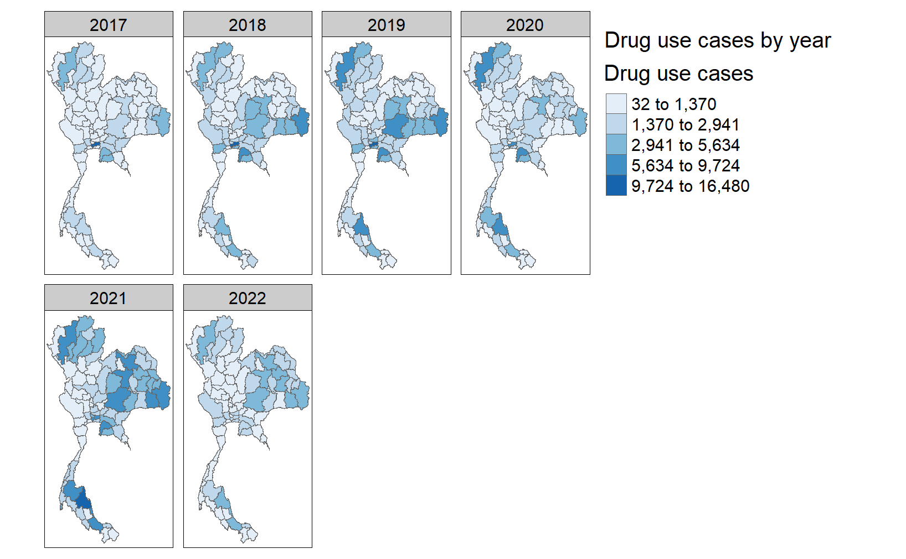
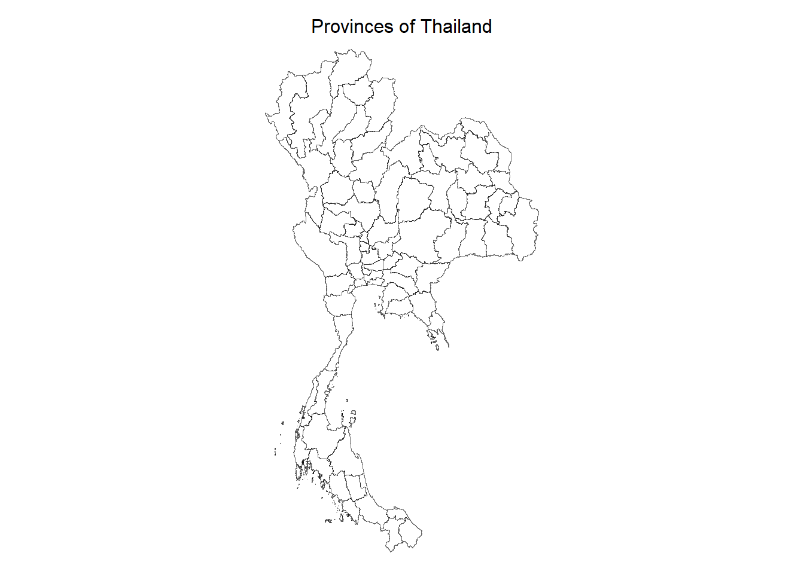
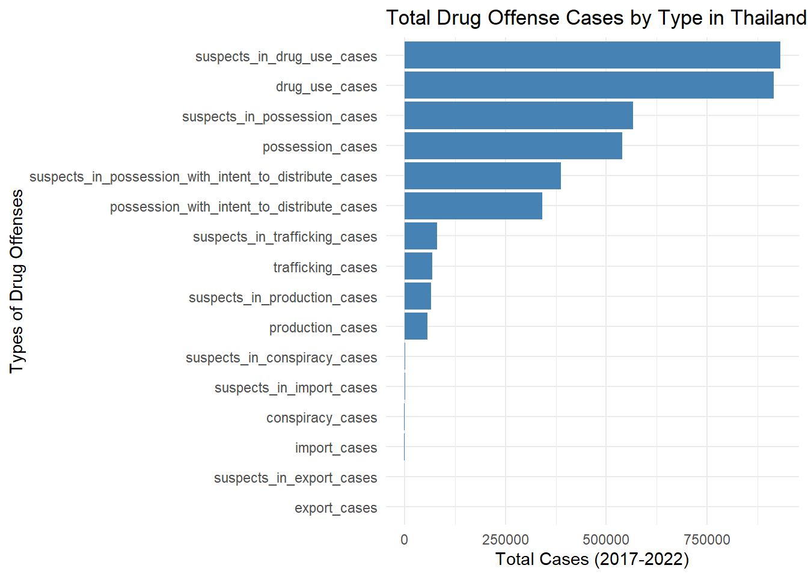
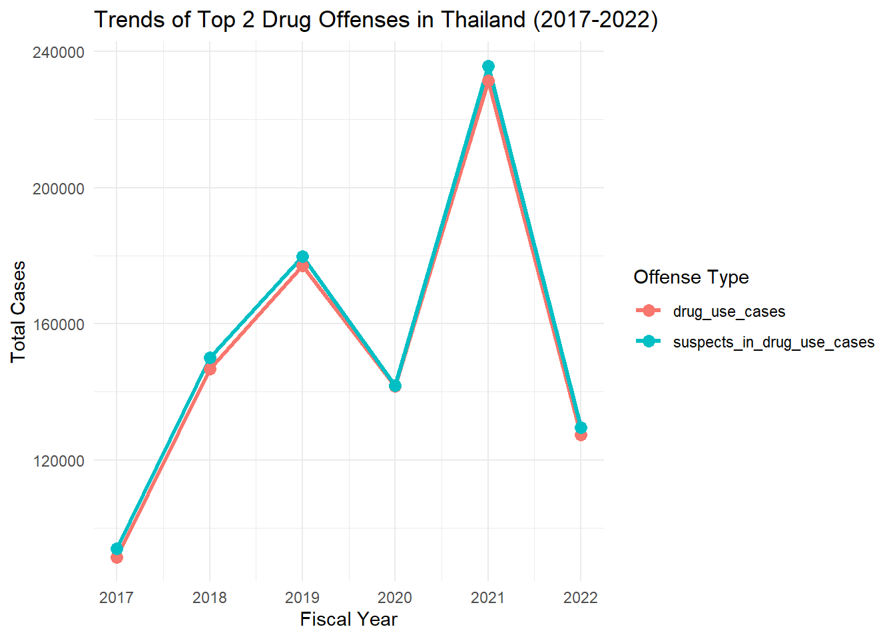
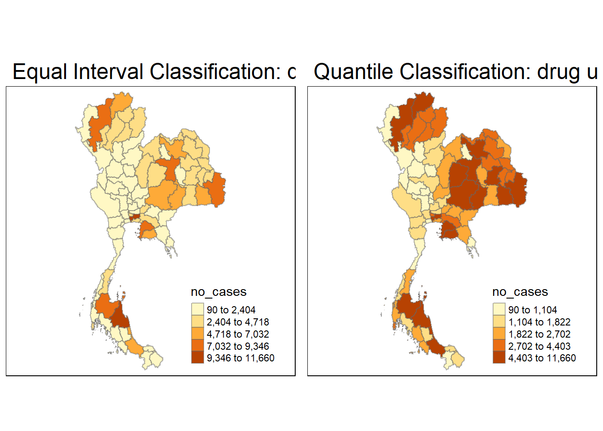
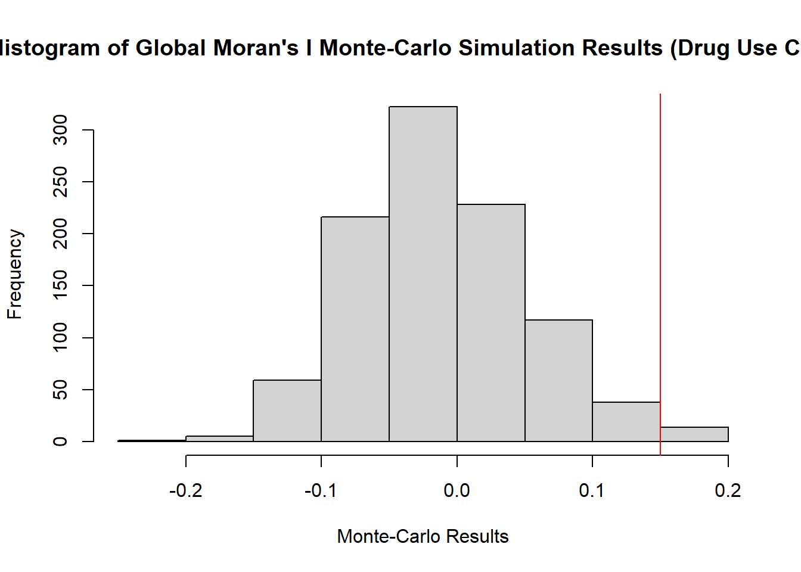
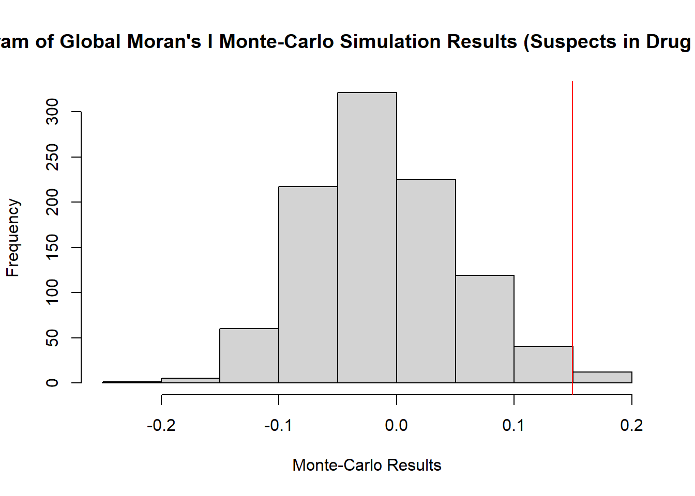
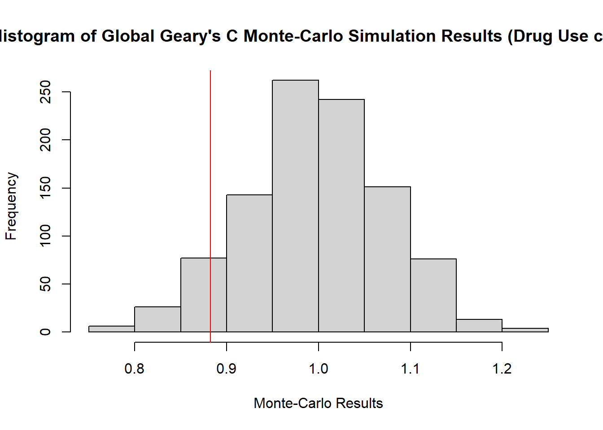
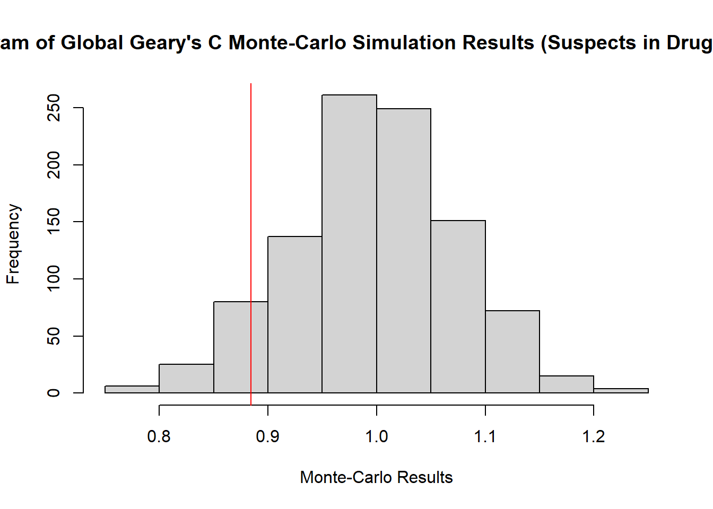

pacman::p_load(sf, dplyr, readr, ggplot2, sfdep, tmap, tidyverse)Take-Home Exercise 2
1. Setting the Scene
Drug abuse is associated with significant negative health, financial and social consequences. Yet, illicit drug consumption remains highly prevalent and continues to be a growing problem worldwide. In 2021, 1 in 17 people aged 15–64 in the world had used a drug in the past 12 months. Notwithstanding population growth, the estimated number of drug users grew from 240 million in 2011 to 296 million in 2021.
The geopolitics of Thailand which is near the Golden Triangle of Indochina, the largest drug production site in Asia, and the constant transportation infrastructure development made Thailand became market and transit routes for drug trafficking to the third countries.
In Thailand, drug abuse is one of the major social issue. There are about 2.7 million youths using drugs in Thailand. Among youths aged between 15 and 19 years, there are about 300,000 who have needs for drug treatment. Most of Thai youths involved with drugs are vocational-school students, which nearly doubles in number compared to secondary-school students.
Figure below shows geographic distribution of drug use cases by province and by year.

1.1 Objectives
As a curious geospatial analytics green horn, you are interested to discover:
if the key indicators of drug abuse of Thailand are independent from space.
If the indicators of drug abuse is indeed spatial dependent, then, you would like to detect where are the clusters and outliers, and the hotspots.
Last but not least, you are also interested to investigate how the observation above evolve over time.
1.2 The Task
The specific tasks of this take-home exercise are as follows:
Using appropriate function of sf and tidyverse, preparing the following geospatial data layer:
a study area layer in sf polygon features. It must be at province level (including Bangkok) of Thailand.
a drug abuse indicators layer within the study area in sf polygon features.
Using the extracted data, perform global spatial autocorrelation analysis by using sfdep methods.
Using the extracted data, perform local spatial autocorrelation analysis by using sfdep methods.
Describe the spatial patterns revealed by the analysis above.
2. Literature Review
2.1 Spatial Autocorrelation
I tried to understand the concept of spatial autocorrelation, which is based on Tobler’s First Law of Geography: “Everything is related to everything else, but near things are more related than distant things” (Tobler, 1970). Spatial autocorrelation measures how much nearby spatial data points are similar or dissimilar to each other. It helps to analyze the extent of clustering or dispersion of spatial phenomena, offering insights into whether specific regions experience higher or lower-than-expected event concentrations. For example, in this context, spatial autocorrelation can reveal whether drug offenses in Thailand are clustered in particular provinces or dispersed across the country.
2.2 Emerging Hotspot Analysis
I tried to explore the concept of emerging hotspot analysis, which identifies areas with a higher concentration of events than expected in a random distribution. Initially rooted in point distribution studies, it’s particularly relevant for detecting trends and patterns over time. In the case of drug offenses in Thailand, this analysis can be used to track changes in the intensity of offenses, identify newly emerging hotspots, or monitor areas where offenses are consistently high. By identifying these hotspots, policymakers can better allocate resources to address issues in specific regions.
3. Importing Packages
I tried to import the necessary R packages using the pacman::p_load() function, which is an efficient way to load multiple libraries in R. These packages include:
sf: for handling spatial data
dplyr and tidyverse: for data manipulation
ggplot2: for data visualization
sfdep: for spatial dependency and autocorrelation analysis
tmap: for creating thematic maps
4. Importing Datasets to R Environment
I tried to load two datasets into the R environment:
Drug offenses dataset: This contains data on drug offenses in Thailand from 2017-2022.
Thai geographic dataset: This shapefile contains the geographic boundaries of Thailand’s provinces.
Drug <- read_csv("data/thai_drug_offenses_2017_2022.csv")Rows: 7392 Columns: 5
── Column specification ────────────────────────────────────────────────────────
Delimiter: ","
chr (3): types_of_drug_offenses, province_th, province_en
dbl (2): fiscal_year, no_cases
ℹ Use `spec()` to retrieve the full column specification for this data.
ℹ Specify the column types or set `show_col_types = FALSE` to quiet this message.thai_geo = st_read(dsn = "data/tha_adm_rtsd_itos_20210121", layer = "tha_admbnda_adm1_rtsd_20220121")Reading layer `tha_admbnda_adm1_rtsd_20220121' from data source
`C:\EasonXu-HY99\IS415\Take-Home_Ex\Take-Home_Ex02\data\tha_adm_rtsd_itos_20210121'
using driver `ESRI Shapefile'
Simple feature collection with 77 features and 16 fields
Geometry type: MULTIPOLYGON
Dimension: XY
Bounding box: xmin: 97.34336 ymin: 5.613038 xmax: 105.637 ymax: 20.46507
Geodetic CRS: WGS 84To ensure the coordinate reference system (CRS) of the geographic dataset is consistent, I used the following code to inspect it:
st_crs(thai_geo)Coordinate Reference System:
User input: WGS 84
wkt:
GEOGCRS["WGS 84",
DATUM["World Geodetic System 1984",
ELLIPSOID["WGS 84",6378137,298.257223563,
LENGTHUNIT["metre",1]]],
PRIMEM["Greenwich",0,
ANGLEUNIT["degree",0.0174532925199433]],
CS[ellipsoidal,2],
AXIS["latitude",north,
ORDER[1],
ANGLEUNIT["degree",0.0174532925199433]],
AXIS["longitude",east,
ORDER[2],
ANGLEUNIT["degree",0.0174532925199433]],
ID["EPSG",4326]]4.1 Visualizing the Map of Thailand’s Provinces
I tried to visualize the provinces of Thailand using the tmap package. The plot shows the boundaries of all provinces with simple white fills and black borders, creating a clean visualization.
tmap_mode("plot")tmap mode set to plottingtm_shape(thai_geo) +
tm_fill(col = "white") +
tm_borders(col = "black", lwd = 0.3, alpha = 0.6) +
tm_layout(
main.title = "Provinces of Thailand",
main.title.size = 1,
main.title.position = "center",
legend.show = FALSE,
frame = FALSE
)
4.2 Projecting and Adding Geometric Attributes
I tried to reproject the geographic dataset into the UTM zone 47N CRS (EPSG: 32647) to make spatial calculations more accurate. I also added two new geometric attributes: Shape_Area (area of each province) and Shape_Length (perimeter).
thai_geo_projected <- st_transform(thai_geo, crs = 32647)thai_geo_projected <- thai_geo_projected %>%
mutate(
Shape_Area = st_area(geometry),
Shape_leng = st_length(st_cast(geometry, "MULTILINESTRING"))
)5. Data Preprocessing
I tried to clean and prepare the drug offenses dataset by correcting misspelled province names. The recode() function is used to ensure consistency between the province names in both datasets.
Drug <- read_csv("data/thai_drug_offenses_2017_2022.csv") %>%
mutate(
province_en = recode(province_en,
"buogkan" = "Bueng Kan",
"Loburi" = "Lop Buri")
)Rows: 7392 Columns: 5
── Column specification ────────────────────────────────────────────────────────
Delimiter: ","
chr (3): types_of_drug_offenses, province_th, province_en
dbl (2): fiscal_year, no_cases
ℹ Use `spec()` to retrieve the full column specification for this data.
ℹ Specify the column types or set `show_col_types = FALSE` to quiet this message.Next, I merged the drug offense data with the geographic dataset by matching provinces. The final dataset includes geographic information, offense types, and the number of cases per province.
merged_data <- left_join(
thai_geo_projected,
Drug,
by = c("ADM1_EN" = "province_en")
) %>%
select(
ADM1_EN,
ADM1_PCODE,
Shape_leng,
Shape_Area,
fiscal_year,
types_of_drug_offenses,
no_cases,
geometry
)
rm(Drug, thai_geo, thai_geo_projected)5.1 Exploring the Data
I tried to explore the unique fiscal years and offense types in the merged dataset:
years_list <- merged_data %>%
pull(fiscal_year) %>%
unique() %>%
sort()
print(years_list)[1] 2017 2018 2019 2020 2021 2022offense_types_list <- merged_data %>%
pull(types_of_drug_offenses) %>%
unique() %>%
sort()
print(offense_types_list) [1] "conspiracy_cases"
[2] "drug_use_cases"
[3] "export_cases"
[4] "import_cases"
[5] "possession_cases"
[6] "possession_with_intent_to_distribute_cases"
[7] "production_cases"
[8] "suspects_in_conspiracy_cases"
[9] "suspects_in_drug_use_cases"
[10] "suspects_in_export_cases"
[11] "suspects_in_import_cases"
[12] "suspects_in_possession_cases"
[13] "suspects_in_possession_with_intent_to_distribute_cases"
[14] "suspects_in_production_cases"
[15] "suspects_in_trafficking_cases"
[16] "trafficking_cases" 5.2 Summarizing and Visualizing Drug Offense Data
I tried to summarize the number of cases for each type of drug offense between 2017-2022 and create a bar plot using ggplot2.
offense_summary <- merged_data %>%
group_by(types_of_drug_offenses) %>%
summarise(total_cases = sum(no_cases, na.rm = TRUE)) %>%
arrange(desc(total_cases))
# View the summary
print(offense_summary)Simple feature collection with 16 features and 2 fields
Geometry type: MULTIPOLYGON
Dimension: XY
Bounding box: xmin: 325178.8 ymin: 620860.6 xmax: 1213656 ymax: 2263241
Projected CRS: WGS 84 / UTM zone 47N
# A tibble: 16 × 3
types_of_drug_offenses total_cases geometry
<chr> <dbl> <MULTIPOLYGON [m]>
1 suspects_in_drug_use_cases 930768 (((424359.7 827043.4, 42…
2 drug_use_cases 915529 (((424359.7 827043.4, 42…
3 suspects_in_possession_cases 566999 (((424359.7 827043.4, 42…
4 possession_cases 538893 (((424359.7 827043.4, 42…
5 suspects_in_possession_with_intent_to_… 386946 (((424359.7 827043.4, 42…
6 possession_with_intent_to_distribute_c… 341283 (((424359.7 827043.4, 42…
7 suspects_in_trafficking_cases 79997 (((424359.7 827043.4, 42…
8 trafficking_cases 68379 (((424359.7 827043.4, 42…
9 suspects_in_production_cases 66247 (((424359.7 827043.4, 42…
10 production_cases 56892 (((424359.7 827043.4, 42…
11 suspects_in_conspiracy_cases 2332 (((424359.7 827043.4, 42…
12 suspects_in_import_cases 1066 (((424359.7 827043.4, 42…
13 conspiracy_cases 920 (((424359.7 827043.4, 42…
14 import_cases 860 (((424359.7 827043.4, 42…
15 suspects_in_export_cases 102 (((424359.7 827043.4, 42…
16 export_cases 84 (((424359.7 827043.4, 42…ggplot(offense_summary, aes(x = reorder(types_of_drug_offenses, total_cases), y = total_cases)) +
geom_bar(stat = "identity", fill = "steelblue") +
coord_flip() +
labs(
x = "Types of Drug Offenses",
y = "Total Cases (2017-2022)",
title = "Total Drug Offense Cases by Type in Thailand (2017-2022)"
) +
theme_minimal()
5.3 Trends for Top Drug Offenses
I tried to identify the top two drug offense types and analyzed their trends over the years. This helps in identifying the offenses that need the most attention.
top_offenses <- offense_summary %>%
top_n(2, total_cases) %>%
pull(types_of_drug_offenses)
print(top_offenses)[1] "suspects_in_drug_use_cases" "drug_use_cases" top_offenses_data <- merged_data %>%
filter(types_of_drug_offenses %in% top_offenses)
yearly_offense_summary <- top_offenses_data %>%
group_by(fiscal_year, types_of_drug_offenses) %>%
summarise(total_cases = sum(no_cases, na.rm = TRUE)) %>%
ungroup()`summarise()` has grouped output by 'fiscal_year'. You can override using the
`.groups` argument.ggplot(yearly_offense_summary, aes(x = fiscal_year, y = total_cases, color = types_of_drug_offenses, group = types_of_drug_offenses)) +
geom_line(size = 1.2) +
geom_point(size = 3) +
labs(
x = "Fiscal Year",
y = "Total Cases",
title = "Trends of Top 2 Drug Offenses in Thailand (2017-2022)",
color = "Offense Type"
) +
theme_minimal()Warning: Using `size` aesthetic for lines was deprecated in ggplot2 3.4.0.
ℹ Please use `linewidth` instead.
6. Data Wrangling
6.1 Overview of Top Drug Offenses in 2021
I tried to analyze the trends in drug offenses for the year 2021, which marks a significant peak in the top two drug offenses throughout the 6-year period (2017-2022). From the graph, we can observe that 2021 witnessed the highest number of drug offense cases, particularly for drug use cases and suspects in drug use cases.
6.1.1 Filtering Data for 2021
To focus on the year 2021, I filtered the dataset to extract the data related to drug use cases and suspects in drug use cases. This allows for a more detailed analysis of these two offense types for that year.
drug_use_cases_data <- merged_data %>%
filter(fiscal_year == "2021", types_of_drug_offenses == "drug_use_cases")suspects_in_drug_use_cases_data <- merged_data %>%
filter(fiscal_year == "2021", types_of_drug_offenses == "suspects_in_drug_use_cases")
rm(merged_data)6.2 Visualizing Drug Use Cases with Different Classification Styles
I tried to visualize the drug use cases offense type using two different classification styles: Equal Interval and Quantile classification. These styles offer different insights into how drug use cases are distributed across the provinces of Thailand.
Equal Interval Classification divides the data range into equal-sized intervals, which can help highlight the absolute differences between provinces.
Quantile Classification divides the data into quantiles, where each class contains an equal number of provinces, making it useful for identifying relative concentrations.
tmap_mode("plot")tmap mode set to plottingequal_drug <- tm_shape(drug_use_cases_data) +
tm_fill("no_cases", n = 5, style = "equal") +
tm_borders(alpha = 0.5) +
tm_layout(main.title = "Equal Interval Classification: drug use cases")
quantile_drug <- tm_shape(drug_use_cases_data) +
tm_fill("no_cases", n = 5, style = "quantile") +
tm_borders(alpha = 0.5) +
tm_layout(main.title = "Quantile Classification: drug use cases")
print(tmap_arrange(equal_drug, quantile_drug, asp = 1, ncol = 2))
6.2.1 Visualizing Suspects in Drug Use Cases
Similarly, I tried to visualize the distribution of suspects in drug use cases using both Equal Interval and Quantile Classification. This comparison allows for a better understanding of how the distribution of suspects differs from the actual drug use cases across provinces.
tmap_mode("plot")tmap mode set to plottingequal_suspects <- tm_shape(suspects_in_drug_use_cases_data) +
tm_fill("no_cases", n = 5, style = "equal") +
tm_borders(alpha = 0.5) +
tm_layout(main.title = "Equal Interval Classification: suspects in drug use cases")
quantile_suspects <- tm_shape(suspects_in_drug_use_cases_data) +
tm_fill("no_cases", n = 5, style = "quantile") +
tm_borders(alpha = 0.5) +
tm_layout(main.title = "Quantile Classification: suspects in drug use cases")
print(tmap_arrange(equal_suspects, quantile_suspects, asp = 1, ncol = 2))7. Global Measures of Spatial Autocorrelation
To examine whether provinces with similar values for drug use cases are clustered together, I tried to compute contiguity spatial weights using the Queen’s contiguity method. This method defines neighboring provinces based on shared boundaries.
neighbors_drug_use <- st_contiguity(drug_use_cases_data, queen = TRUE)Warning in spdep::poly2nb(geometry, queen = queen, ...): some observations have no neighbours;
if this seems unexpected, try increasing the snap argument.Warning in spdep::poly2nb(geometry, queen = queen, ...): neighbour object has 2 sub-graphs;
if this sub-graph count seems unexpected, try increasing the snap argument.summary(neighbors_drug_use)Neighbour list object:
Number of regions: 77
Number of nonzero links: 352
Percentage nonzero weights: 5.93692
Average number of links: 4.571429
1 region with no links:
67
2 disjoint connected subgraphs
Link number distribution:
0 1 2 3 4 5 6 7 8 9
1 1 5 17 15 17 10 5 4 2
1 least connected region:
14 with 1 link
2 most connected regions:
29 51 with 9 linksFor further analysis, I also calculated the centroids of each province to apply k-nearest neighbors (k=5), which helps explore relationships between provinces based on proximity.
Why Use Centroids and KNN:
One region with no links: The summary shows 1 region (region 67) has no neighbors (0 links). This suggests that, using contiguity-based methods alone, some regions were isolated, preventing them from being included in the spatial analysis.
Disjoint connected subgraphs: The presence of disjoint subgraphs (separate groups of connected regions) means the spatial connectivity is fragmented, further justifying the need for KNN to ensure that all regions have neighbors.
KNN ensures connectivity: By using centroids and calculating KNN, I ensure that every region (including isolated ones) has neighbors, maintaining the integrity of the spatial analysis. KNN allows me to connect regions even if they are not physically contiguous but spatially close based on distance.
Balanced links: KNN balances the number of links per region. In this case, the average number of links is 4.57, ensuring more consistent neighbor counts across regions and improving the reliability of the spatial analysis.
centroids_drug_use <- st_centroid(drug_use_cases_data)Warning: st_centroid assumes attributes are constant over geometriesneighbors_drug_use <- st_knn(centroids_drug_use, k = 5)I tried to compute the spatial weights matrix using the contiguity-based neighbors. The spatial weights are calculated using the “W” style, which standardizes the weights by the sum of all neighbors.
weights_drug_use <- st_weights(neighbors_drug_use, style = "W")Similarly, I tried to compute the spatial relationships for suspects in drug use cases. This analysis helps determine whether provinces with higher numbers of suspects are spatially clustered.
neighbors_suspect <- st_contiguity(suspects_in_drug_use_cases_data, queen = TRUE)Warning in spdep::poly2nb(geometry, queen = queen, ...): some observations have no neighbours;
if this seems unexpected, try increasing the snap argument.Warning in spdep::poly2nb(geometry, queen = queen, ...): neighbour object has 2 sub-graphs;
if this sub-graph count seems unexpected, try increasing the snap argument.summary(neighbors_suspect)Neighbour list object:
Number of regions: 77
Number of nonzero links: 352
Percentage nonzero weights: 5.93692
Average number of links: 4.571429
1 region with no links:
67
2 disjoint connected subgraphs
Link number distribution:
0 1 2 3 4 5 6 7 8 9
1 1 5 17 15 17 10 5 4 2
1 least connected region:
14 with 1 link
2 most connected regions:
29 51 with 9 linksI applied the same k-nearest neighbors approach to this dataset as well:
centroids_suspects <- st_centroid(suspects_in_drug_use_cases_data)Warning: st_centroid assumes attributes are constant over geometriesneighbors_suspect <- st_knn(centroids_suspects, k = 5)Finally, I calculated the spatial weights for the suspects in drug use cases dataset:
weights_suspect <- st_weights(neighbors_suspect, style = "W")7.1 Global Moran’s I Test
I tried to perform the Global Moran’s I test, which is a measure of global spatial autocorrelation. It evaluates whether the spatial distribution of drug use cases and suspects in drug use cases shows a pattern that is significantly clustered or dispersed compared to a random distribution.
7.1.1 Global Moran’s I for Drug Use Cases
First, I calculated the Global Moran’s I statistic for drug use cases in 2021 using the contiguity-based neighbors and weights previously computed. This statistic helps to identify the level of spatial autocorrelation for drug use cases across Thai provinces.
moran_drug_use_result <- global_moran(
drug_use_cases_data$no_cases,
neighbors_drug_use,
weights_drug_use
)
print(moran_drug_use_result)$I
[1] 0.1501002
$K
[1] 4.710498Next, I conducted a Moran’s I significance test to evaluate whether the observed spatial autocorrelation is statistically significant.
global_moran_test(
drug_use_cases_data$no_cases,
neighbors_drug_use,
weights_drug_use,
zero.policy = TRUE,
na.action=na.omit)
Moran I test under randomisation
data: x
weights: listw
Moran I statistic standard deviate = 2.5631, p-value = 0.005187
alternative hypothesis: greater
sample estimates:
Moran I statistic Expectation Variance
0.150100162 -0.013157895 0.004057091 7.1.2 Global Moran’s I for Suspects in Drug Use Cases
Similarly, I calculated the Global Moran’s I for suspects in drug use cases to assess whether there is a similar pattern of spatial clustering.
moran_suspect_result <- global_moran(
suspects_in_drug_use_cases_data$no_cases,
neighbors_suspect,
weights_suspect
)
print(moran_suspect_result)$I
[1] 0.1495297
$K
[1] 4.669362I also performed a significance test for Moran’s I on the suspects dataset:
global_moran_test(
suspects_in_drug_use_cases_data$no_cases,
neighbors_suspect,
weights_suspect,
zero.policy = TRUE,
na.action=na.omit)
Moran I test under randomisation
data: x
weights: listw
Moran I statistic standard deviate = 2.5534, p-value = 0.005334
alternative hypothesis: greater
sample estimates:
Moran I statistic Expectation Variance
0.149529690 -0.013157895 0.004059449 7.2 Performing Global Moran’s I Permutation Test
To further assess the significance of Moran’s I statistic, I tried to perform a permutation test with 999 simulations. This test creates a distribution of Moran’s I values under the assumption of spatial randomness, and then compares the observed value to this distribution.
7.2.1 Permutation Test for Drug Use Cases
set.seed(1234)
gmoran_drug_use <- global_moran_perm(
drug_use_cases_data$no_cases,
neighbors_drug_use,
weights_drug_use,
nsim = 999)
gmoran_drug_use
Monte-Carlo simulation of Moran I
data: x
weights: listw
number of simulations + 1: 1000
statistic = 0.1501, observed rank = 987, p-value = 0.026
alternative hypothesis: two.sidedThe histogram below visualizes the distribution of the permuted Moran’s I statistics, with the observed value marked in red:
hist(gmoran_drug_use$res, main="Histogram of Global Moran's I Monte-Carlo Simulation Results (Drug Use Cases)", xlab="Monte-Carlo Results", ylab="Frequency")
abline(v = gmoran_drug_use$statistic, col = "red")
In the Global Moran’s I Monte Carlo Simulation results depicted in the histogram, I can see the distribution of simulated Moran’s I values under the null hypothesis of no spatial autocorrelation. The observed Moran’s I value is marked by the red vertical line. From the plot, it is clear that the observed Moran’s I value (around 0.15) is positioned to the right of the bulk of the simulated values, which center around 0. This indicates that the observed value is significantly higher than most of the random simulations, further supporting the presence of positive spatial autocorrelation in the data. The shape of the histogram shows the range of possible Moran’s I values under the assumption of spatial randomness, and the positioning of the observed value outside this range confirms the statistical significance of the spatial clustering observed in the previous test. This visual representation reinforces the conclusion that the spatial patterns in the data are not random but exhibit significant spatial dependence.
7.2.2 Permutation Test for Suspects in Drug Use Cases
The same permutation test was performed for suspects in drug use cases:
set.seed(1234)
gmoran_suspect <- global_moran_perm(
suspects_in_drug_use_cases_data$no_cases,
neighbors_suspect,
weights_suspect,
nsim = 999)
gmoran_suspect
Monte-Carlo simulation of Moran I
data: x
weights: listw
number of simulations + 1: 1000
statistic = 0.14953, observed rank = 987, p-value = 0.026
alternative hypothesis: two.sidedThe histogram of results, with the observed Moran’s I statistic marked, helps assess the significance of spatial clustering:
hist(gmoran_suspect$res, main="Histogram of Global Moran's I Monte-Carlo Simulation Results (Suspects in Drug Use Cases)", xlab="Monte-Carlo Results", ylab="Frequency")
abline(v = gmoran_suspect$statistic, col = "red")
In this updated Global Moran’s I Monte Carlo Simulation result, I observed a histogram displaying the distribution of simulated Moran’s I values under the assumption of spatial randomness. The red vertical line represents the observed Moran’s I statistic, which appears around 0.15 and is noticeably positioned to the right of the majority of the simulated Moran’s I values, which cluster around 0. This demonstrates that the observed Moran’s I is significantly greater than the random expectations, reinforcing the presence of positive spatial autocorrelation in the data. The fact that the observed value lies far outside the bulk of the Monte Carlo results supports the earlier finding that the spatial pattern in the data is not due to chance, but rather, exhibits a statistically significant spatial clustering.
7.3 Global Geary’s C Test
I tried to perform the Global Geary’s C test, another global measure of spatial autocorrelation. Unlike Moran’s I, which focuses on global spatial patterns, Geary’s C is more sensitive to local differences. It can highlight differences between individual provinces and their neighbors in terms of drug offense counts.
7.3.1 Global Geary’s C for Drug Use Cases
global_c_test(
drug_use_cases_data$no_cases,
neighbors_drug_use,
weights_drug_use)
Geary C test under randomisation
data: x
weights: listw
Geary C statistic standard deviate = 1.5296, p-value = 0.06306
alternative hypothesis: Expectation greater than statistic
sample estimates:
Geary C statistic Expectation Variance
0.88246518 1.00000000 0.00590431 7.3.2 Global Geary’s C for Suspects in Drug Use Cases
global_c_test(
suspects_in_drug_use_cases_data$no_cases,
neighbors_suspect,
weights_suspect)
Geary C test under randomisation
data: x
weights: listw
Geary C statistic standard deviate = 1.5088, p-value = 0.06568
alternative hypothesis: Expectation greater than statistic
sample estimates:
Geary C statistic Expectation Variance
0.884258244 1.000000000 0.005884967 7.4 Performing Global Geary’s C Permutation Test
Similar to Moran’s I, I also tried to conduct a permutation test for Global Geary’s C. This Monte Carlo simulation helps assess the significance of the observed Geary’s C statistic under the assumption of spatial randomness.
7.4.1 Permutation Test for Drug Use Cases
set.seed(1234)
bperm_drug_use <- global_c_perm(
drug_use_cases_data$no_cases,
neighbors_drug_use,
weights_drug_use,
nsim = 999)
bperm_drug_use
Monte-Carlo simulation of Geary C
data: x
weights: listw
number of simulations + 1: 1000
statistic = 0.88247, observed rank = 67, p-value = 0.067
alternative hypothesis: greaterThe histogram of the permuted results shows how the observed statistic compares to the simulated ones:
hist(bperm_drug_use$res, main="Histogram of Global Geary's C Monte-Carlo Simulation Results (Drug Use cases)", xlab="Monte-Carlo Results", ylab="Frequency")
abline(v = bperm_drug_use$statistic, col = "red")
In the Global Geary’s C Monte Carlo Simulation result shown in the histogram, I observed the distribution of simulated Geary’s C values under the null hypothesis of spatial randomness. The red vertical line marks the observed Geary’s C statistic, which is around 0.9, while most of the simulated values are centered around 1.0.
Geary’s C values typically range from 0 to 2:
C < 1 indicates positive spatial autocorrelation (i.e., nearby regions are similar).
C > 1 suggests negative spatial autocorrelation (i.e., nearby regions are dissimilar).
Since the observed Geary’s C value is less than 1.0, it suggests positive spatial autocorrelation, meaning that regions close to each other tend to have similar values. Additionally, the position of the observed Geary’s C value outside the main bulk of the simulated distribution confirms that this spatial autocorrelation is statistically significant. Thus, there is evidence of clustering in the data, with similar values tending to be geographically close to one another.
7.4.2 Permutation Test for Suspects in Drug Use Cases
set.seed(1234)
bperm_suspect <- global_c_perm(
suspects_in_drug_use_cases_data$no_cases,
neighbors_suspect,
weights_suspect,
nsim = 999)
bperm_suspect
Monte-Carlo simulation of Geary C
data: x
weights: listw
number of simulations + 1: 1000
statistic = 0.88426, observed rank = 73, p-value = 0.073
alternative hypothesis: greaterhist(bperm_suspect$res, main="Histogram of Global Geary's C Monte-Carlo Simulation Results (Suspects in Drug Use cases)", xlab="Monte-Carlo Results", ylab="Frequency")
abline(v = bperm_suspect$statistic, col = "red")
In this Global Geary’s C Monte Carlo Simulation result, I observed the distribution of simulated Geary’s C values, with the red vertical line representing the observed Geary’s C statistic, which is approximately 0.9. The bulk of the simulated values are centered around 1.0, which is the expected value under the assumption of no spatial autocorrelation.
A Geary’s C value less than 1 (like the observed 0.9) suggests positive spatial autocorrelation, meaning nearby regions have similar values.
The fact that the observed value lies outside the majority of the simulated results indicates that the spatial clustering of similar values is statistically significant and unlikely to have occurred by chance.
Thus, the data exhibit significant spatial autocorrelation, where regions close to each other are more likely to have similar values, supporting the hypothesis of spatial dependence in the dataset.